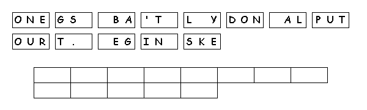

Arbeitsblätter fürs Papier |
webaktive Übungen |
visuelle Kommunikation |
Links |
wir |
Home |
|
Kre |
|||||
|
Puzzelmaker | 1 | 2 | 3 | |
Gestaltung | woher+wieviel | |||
|
Letter Tiles: Aus einem Satz, Zitat, Sprichwort etc. macht der Puzzelmaker Buchstaben-Blöcke, deren Größe man bestimmen kann. anshcließend werden die Blöcke gemixt. |
|||||
|
Beispiel: Ein englisches Sprichwort, das zur Diversifizierung rät |
|||||
|  | |||||
|
Einschränkung: Auch hier wäre es gut, wenn man "give-aways" einsetzen könnte. Bei längeren Zitaten/Sätzen wird das Lösen zum Geduldsspiel, und man muss irgendwann die Frage nach dem didaktischen Sinn stellen. Für Rätselfreundei st sowas natürlich ein gefundenes Fressen! |
|||||